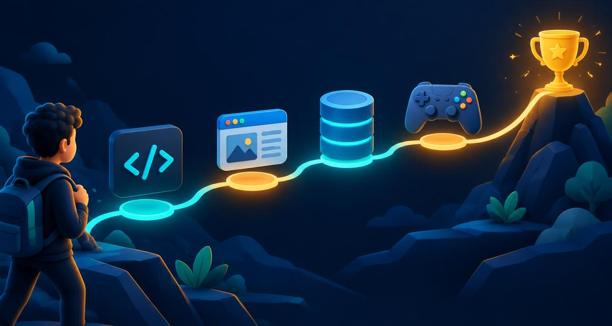

دروس عميقة بالعربية والإنجليزية مع أمثلة كود وتمارين واختبارات، من إعداد ماجد السكني.
Database indexes: why a query drops from seconds to milliseconds
شرح بنية B-Tree، وترتيب الأعمدة في الفهرس المركب، والانتقائية، ومتى يضر الفهرس بدل أن ينفع.
Sessions and tokens: designing authentication without illusions
الفرق بين الجلسة والتوكن، لماذا لا يمكن إبطال JWT بسهولة، وأين تُخزّن التوكنات بأمان.
How the browser renders a page: from bytes to pixels
مسار العرض في المتصفح: التحليل، شجرة DOM و CSSOM، التخطيط، الرسم، والدمج، ولماذا يقرر ذلك سرعة موقعك.
Asynchrony in JavaScript: the event loop and promises in depth
نموذج ذهني دقيق لحلقة الأحداث وطوابير المهام الدقيقة والكبرى، وكيف يترجم async/await إلى وعود.